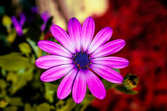

Luz
Es curioso como el destino encuentra su camino, como una pequeña luciérnaga que vuela en la soledad de la noche, entre cientos de árboles, sin parecer tener un lugar al cual llegar, es solo una pequeña lucesita que se desvanece en la enormidad del horizonte, es un suspiro, un beso, un té amo, algo tan pequeño que pudo haber quedado perdido en el pasado, pero de alguna manera milagrosa, como por arte de magia, llego a su destino, como por arte de magia su luz no se perdió en el vacío, como por arte de magia su luz lleno mi corazón, brilla pequeña lucesita veamos si puedes encender ese amor una vez más, veamos si esta vez tu luz brilla con más intensidad.
luna

Un día te perdí, mil noche pásate en quien sabe que lugar, mil noches no supe de tu existencia, no te mentiré, con el paso de los días te olvide, solo te convertiste en un recuerdo fugaz, una pequeña mueca de de felicidad en mis labios, una lagrima , una imagen que se colaba por el rabillo de mi ojo, no te vi por tanto tiempo y casi deje de pensar en ti, casi, deje de mirar la luna que compartíamos, deje de preguntarle si estabas bien, deje de pedirle que te cuidara por mi, me olvide de ti o eso creí, pues un día la luna te trajo de vuelta, y supe que tu aun la mirabas pensado en mi, preguntándole donde estaba, pidiéndole que me cuidara, pidiéndole que algún día regresara a ti.
Veneno

Llevo en el alma ira infinita, un fuego que me quema por dentro, recuerdos que devoran mi
mente, voces del pasado que claman venganza, llevo veneno en la sangre, llevo la marca de cain en
la frente, paria entre los hombres, demasiado salvaje para las bestias, mírame caminar entre los
monstruos, como una sombra que vaga por los oscuros bosque en las noches de invierno, como un
espíritu que a perdido su carne, como la sombra de la muerte que trae consigo la peste y el hambre.
Llevo veneno en la sangre, ha corroído mi cuerpo, enloquecido mi mente, se ha llevado la poca
humanidad que me quedaba, llevo veneno en la sangre por no poder soltar los recuerdos que me ataban a ti.
Abismo

Como puedo explicarte lo que he mirado en la oscuridad, el lugar frio y pútrido que visito a menudo, como puedo describirte los gritos, las voces que salen de ese lugar, como puedo explicarte el dolor, la angustia, la furia contenida ahí, como puedo mirarte a los ojos después de lo que he visto, como puedo tomar tu mano después de caminar solo por ese lugar, como puedo sentir algo si han desgarrado mi alma, si quebraron mis huesos, si cada rastro de esperanza, fue robado de mi cuerpo, como puedo seguir adelante si mis piernas están destrozadas, si estoy tan cansado, y lo único que alivia mi sufrimiento es el apegarme a tu recuerdo, esos pequeños recuerdos de lo que vivimos juntos, del suave toque de tus manos, el sabor de tus labios, lo profundo de tu mirada y ese brillo que habita en tus ojos, como puedo rendirme si anhelo estar contigo una vez mas.
Tristeza

Casi no recuerdo esos días, ha pasado tanto tiempo, solo recuerdo un corazón rotó, lágrimas que eran cubiertas por la lluvia, solo recuerdo que dije que no pasaba nada, que estaba bien, te desee el mejor de los destinos, que fueras feliz, que amaras a manos llenas, que vivieras una vida grandiosa, mientras yo superaba tu perdida, puse mi cara de poker y afronte la vida, un día a la vez, remendé mi corazón, una puntada a la vez, si lo admito, hubo noches en que quise saber de ti, que no dormía pensando en ti, y aunque creí que estaría bien esa tristeza infinita no se iba nunca, nunca se fue, solo la comprimí en una pequeña cajita y la aventé al lugar más oscuro de mi corazón, no la he vuelto a ver, pero a veces en las noches solitarias creo que sigue ahí.
Mito

Se dice que no venimos solos al mundo, se dice que nos humanos fuimos creados en pares, que en algún lugar del mundo una persona espera por ti, que un hilo rojo del destino te conecta con ella de alguna manera, que tarde o temprano la encontraras, que tarde o temprano esa persona vendrá a ti, que en algún lugar del universo esa persona siempre estará esperando por ti, que por un acto divino un día se encontraran el la calle, en una fiesta, en la entrada de un cine, que se yo, y que esa chispa que los une hará su magia, sus meradas se cruzaran y lo sabrás, por fin se encontraron, lo que estuviste buscando toda la vida y no sabias, esa persona que hará latir tu corazón como ninguna otra, que hará temblar tus manos el solo estar en su presencia, que erizara tu piel con un susurro en tu odio, se dice el día en que se encuentren llegara y entonces jamas podrán dejarse quizá sea así, quizá solo sea un mito.
Memoria
no creo que lo entiendas, no lo olvide, nunca olvido nada, no se si es algún tipo de bendición o maldición, han pasado tantos años y aun veo las imágenes en mi mente como si hubiera sido ayer, como si nunca te hubieras ido, es como ver una película con los buenos momentos, los malos, todos esos pequeños instantes que pasamos juntos, se que ya lo has olvidado casi en su totalidad, pero yo te recordé todo este tiempo, y se que te recordare para la eternidad, se que recordare siempre tus ojos, tu sonrisa, el sonido de tu voz y el olor de tu pelo, lo que se sentía estar en tus brazos a que sabían tus besos, sabes no lo olvide aunque pasaron tantos años, y se que no habrá un momento en mi vida donde quedes en el olvido, así pasen cien años y la vejes haya hecho estragos con mi ser, todos esos momentos me acompañaran hasta el día en que no este aquí, tal vez me valla yo antes que mis recuerdos, tal vez me olvides tu antes de que deje de verte en mis recuerdos, antes de que deje de verte en mis sueños, se que no lo entiendes pero nunca te has ido y nuca te iras.
Amor

Que nos queda si no la vieja sombra de lo que fuimos, recuerdos, heridas de una gran batalla, fuimos como un cometa que pasa una vez en la vida algo hermoso y fugaz, como puedo describir el amor que tengo por ti, cómo comparar los momentos que me diste, con que los compararía, con el sol? Con la luna? Cómo describir el universo de emociones que me hace sentir, como? Como te describo a ti, qué palabras podría usar que no se hayan usado antes, que puedo decir de ti cómo puedo explicar al mundo lo que siento al ver tus ojos, al escuchar tu voz, que digo sobre cómo el latido de mi corazón se desborda al sentir tus manos, que puedo decir acerca de cómo mi alma vuela al sentir tus besos, como apilo las palabras para que suenen de manera poética, para que conmuevan tu corazón, para que un montón de letras te den siquiera un pequeña pista de lo que tu me haces sentir, de lo que tu me haces vivir, de cómo cambias mi mundo, de la manera en que te convertiste en mi universo, la luz que guía mis pasos,esa pequeña llama que enciende mi corazón cada mañana que me da una razón para vivir.
Inmortalidad

Me asegure de ser inmortal, de vivir para siempre en tus recuerdos, logre ser inolvidable, no hice nada impresionante, solo camine a tu lado, tome tu mano y acaricie tu alma, no hice nada que no pudiera hacer otro hombre, simplemente te mostré una parte de mi que no suelo mostrar al mundo, esos ojos vidriosos, esa sonrisa tonta, la mirada intensa que trata de revelar tus secretos, no hice nada, solo te bese, te hice temblar de emoción, te hice reír como una niña, no hice nada, solo reviví tu alma, te hice soñar una vez mas, te hice querer ver el futuro, no hice nada, solo me grabe en tu corazón de una forma en la que jamás podrás borrarme, si ahora puedo verte, en tus años de vejez mirando tus recuerdos con nostalgia, recordando quien fui y que signifique para ti, si ahora soy inmortal, viviré en ti para siempre, viviré contigo hasta que mueras o me olvides.